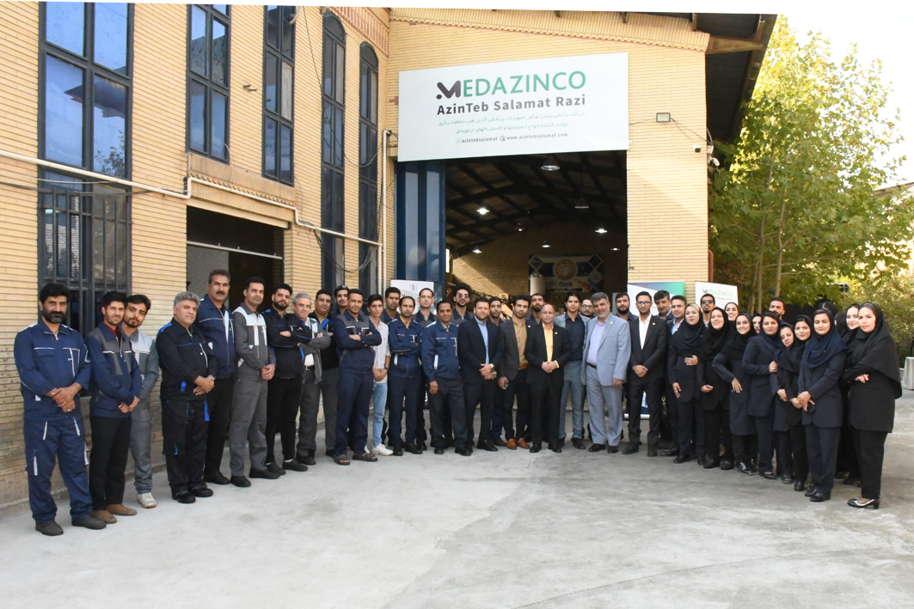

۲۵+
سال تجربه
۸۷
قطعه در کاتالوگ
۴
فاز تولید
مدیریت

Reza Abdollahi
بنیانگذار شرکت آذین طب سلامت رازی
مهندس رضا عبداللهی، بنیانگذار آیندهنگر شرکت آذین طب سلامت رازی، یکی از تولیدکنندگان پیشرو ایمپلنتهای ارتوپدی و سیستمهای فیکساسیون خارجی است. با پیشینهای در مهندسی، مدیریت کسبوکار و فناوری ارتوپدی، و بیش از ۲۵ سال تجربه در صنعت تجهیزات پزشکی، نقش کلیدی در ارتقای تولید ارتوپدی از نظر کیفیت و نوآوری داشته است.
تحت مدیریت ایشان، شرکت آذین طب سلامت رازی از یک واحد تولیدی کوچک به نامی معتبر در راهحلهای ارتوپدی تبدیل شده و ایمپلنتهای دقیق خود را به بیمارستانها، جراحان و توزیعکنندگان در سطح ملی و بینالمللی عرضه میکند.
تحت مدیریت ایشان، شرکت آذین طب سلامت رازی از یک واحد تولیدی کوچک به نامی معتبر در راهحلهای ارتوپدی تبدیل شده و ایمپلنتهای دقیق خود را به بیمارستانها، جراحان و توزیعکنندگان در سطح ملی و بینالمللی عرضه میکند.
کارخانه و امکانات تولید

نمایی از پروژههای جدید و فازهای مختلف کارخانهی آذین طب سلامت رازی.
شرکت آذین طب سلامت رازی

شرکت آذین طب سلامت رازی با استعانت از پروردگار متعال فعالیت خود را در حوزه تولید تجهیزات پزشکی از تابستان سال ۱۳۹۵ شروع نموده است؛ این شرکت با بهرهگیری از پرسنل متخصص و تجهیزات مدرن، با هدف تولید انواع ایمپلنت و اکسترنالهای ارتوپدی، با ۲۰ نفر پرسنل و تعداد ۸ عدد دستگاه و ماشینآلات صنعتی در فضای ۱۰۰۰ متری شهرک صنعتی توس مشهد آغاز به کار نمود.
از ویژگیهای این مجموعه بهرهگیری از نیروهای جوان، تحصیلکرده در سطوح تکنسین فنی، کارشناس، کارشناس ارشد در رشتههای مکانیک، بیومکانیک، صنایع، برق میباشد. مواد اولیه از کارخانههای معتبر تهیه میگردد که جنس و کیفیت این مواد پیش از بهکارگیری با دقت کنترل میگردد.
از نظر طراحی باید عنوان نمود که طراحی محصولات تولیدی شرکت کاملاً منطبق بر برندهای معروف و شناختهشده میباشد؛ با این حال همواره از نظرات پزشکان متخصص استفاده میشود و در موارد لازم بهینهسازی انجام میگیرد. استفاده از دستگاههای اتوماتیک در ساخت قطعات، نتیجهی آن دستیابی به افزایش سرعت در عین کیفیت و دقت ابعادی بالا در تمام قطعات تولیدی شرکت میباشد.
از جمله این دستگاهها در بخش تولید میتوان به انواع CNC تراش و فرز، CNC هفتمحور اشاره نمود. در بخش کنترل کیفیت از دستگاههای اندازهگیری دیجیتال با دقت بالا بهمنظور تضمین کیفیت استفاده میشود. از دیگر موارد مهمی که در بخش کنترل کیفیت محصولات میتوان به آن اشاره نمود، کنترل ۱۰۰ درصدی محصولات با توجه به طرح کیفیت همان محصول میباشد. در حال حاضر از عمده تولیدات این شرکت اکسترنال فیکساتور میباشد.
شرکت آذین طب سلامت رازی پس از گذشت مدت کوتاهی موفق به اخذ مجوزها و استانداردهایی از قبیل پروانهی ساخت فیکساتورهای خارجی استخوان از ادارهکل تجهیزات پزشکی، و استاندارد سیستم مدیریت کیفیت در تجهیزات پزشکی ISO 13485 از شرکت IGS کره گردید.
افزایش سطح رضایتمندی مشتریان از طریق سرلوحه قراردادن کیفیت، مهمترین اولویت این مجموعه میباشد. این شرکت امید دارد سهم خود را در ارتقای سلامت جامعه ایفا نماید.
از ویژگیهای این مجموعه بهرهگیری از نیروهای جوان، تحصیلکرده در سطوح تکنسین فنی، کارشناس، کارشناس ارشد در رشتههای مکانیک، بیومکانیک، صنایع، برق میباشد. مواد اولیه از کارخانههای معتبر تهیه میگردد که جنس و کیفیت این مواد پیش از بهکارگیری با دقت کنترل میگردد.
از نظر طراحی باید عنوان نمود که طراحی محصولات تولیدی شرکت کاملاً منطبق بر برندهای معروف و شناختهشده میباشد؛ با این حال همواره از نظرات پزشکان متخصص استفاده میشود و در موارد لازم بهینهسازی انجام میگیرد. استفاده از دستگاههای اتوماتیک در ساخت قطعات، نتیجهی آن دستیابی به افزایش سرعت در عین کیفیت و دقت ابعادی بالا در تمام قطعات تولیدی شرکت میباشد.
از جمله این دستگاهها در بخش تولید میتوان به انواع CNC تراش و فرز، CNC هفتمحور اشاره نمود. در بخش کنترل کیفیت از دستگاههای اندازهگیری دیجیتال با دقت بالا بهمنظور تضمین کیفیت استفاده میشود. از دیگر موارد مهمی که در بخش کنترل کیفیت محصولات میتوان به آن اشاره نمود، کنترل ۱۰۰ درصدی محصولات با توجه به طرح کیفیت همان محصول میباشد. در حال حاضر از عمده تولیدات این شرکت اکسترنال فیکساتور میباشد.
شرکت آذین طب سلامت رازی پس از گذشت مدت کوتاهی موفق به اخذ مجوزها و استانداردهایی از قبیل پروانهی ساخت فیکساتورهای خارجی استخوان از ادارهکل تجهیزات پزشکی، و استاندارد سیستم مدیریت کیفیت در تجهیزات پزشکی ISO 13485 از شرکت IGS کره گردید.
افزایش سطح رضایتمندی مشتریان از طریق سرلوحه قراردادن کیفیت، مهمترین اولویت این مجموعه میباشد. این شرکت امید دارد سهم خود را در ارتقای سلامت جامعه ایفا نماید.
مشاهدهی کاتالوگ محصولات ←
۸۷ قطعه ارتوپدی، دستهبندیشده با نمایش سهبعدی تعاملی